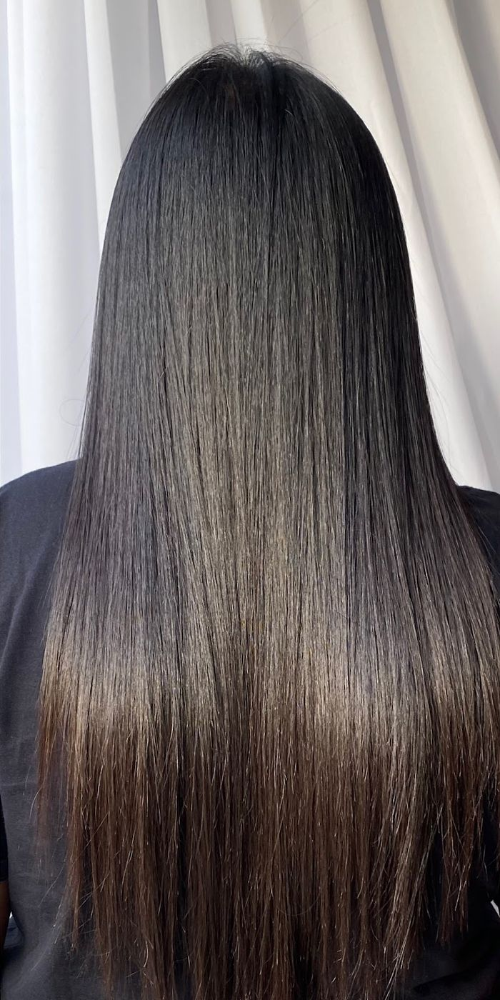
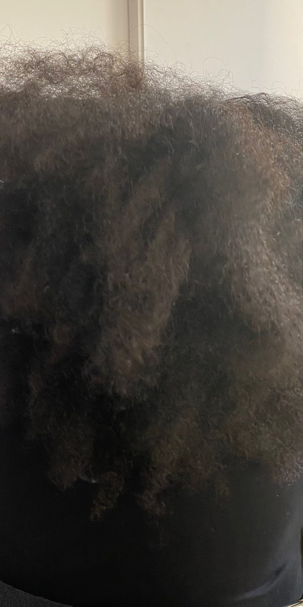

ביקורות בגוגלGoogle reviews
קונספט לדוגמה שנבנה עבור אור אטיאס עיצוב שיער · זה אינו האתר הרשמי של העסקA sample concept built for Or Atias Hair Design · This is not the business’s official website
גוונים, החלקות וצבע, ברחוב העמק 3 בנשר.Highlights, smoothing and colour, on 3 HaEmek Street in Nesher.
5.0· 51 ביקורות בגוגל· 51 Google reviewsבלונד, גוונים וצבע, קווצה אחר קווצה.Blonde, highlights and colour, strand by strand.
״יצאתי בדיוק כמו שדמיינתי, עם גווני בלונד מושלמים שקיבלתי עליהם אינסוף מחמאות.״
“I came out exactly as I imagined, with perfect blonde tones I got endless compliments on.” (translated from Hebrew)
אורית אבבה · Google
גררו את המחליק על התמונה: לפני ואחרי, מהעבודות של אור.Drag the iron across the photo: before and after, from Or’s own work.


לפניBefore אחריAfter״הגעתי לאור בהתחלה בשביל החלקה, ומאז חזרתי גם לתספורת, צבע ועכשיו גם גוונים.״
“I first came to Or for smoothing, and since then I’ve come back for a cut, colour and now highlights too.” (translated from Hebrew)
Orel Bordeynik · Google
עבודות מהסטודיו, כפי שאור פרסמה בגוגל.Work from the studio, as Or posted it on Google.
ביקורות בגוגלGoogle reviews
״יודעת להתאים בדיוק מה שמתאים לשיער ולפנים.״
“She knows how to match exactly what suits your hair and face.” (translated from Hebrew)
Orel Bordeynik
פתיחה במפותOpen in Maps
@or.hairstyle_בוחרים טיפול ושעה ביום, וההודעה לאור נכתבת לבד.Pick a treatment and a time of day, and the message to Or writes itself.
״אור פשוט מדהימה! נעימה, מקצועית וסופר מדויקת בעבודה שלה. יצאתי בדיוק כמו שדמיינתי, עם גווני בלונד מושלמים שקיבלתי עליהם אינסוף מחמאות. ממליצה בחום!״
“Or is simply amazing! Pleasant, professional and super precise in her work. I came out exactly as I imagined, with perfect blonde tones I got endless compliments on. Highly recommended!” (translated from Hebrew)
״אור כזאת נעימה ומאירת פנים!! כמובן שהתוצאה הייתה בדיוק מה שרציתי אבל בנוסף היחס והסבלנות היו מה שכל לקוחה הייתה רוצה לקבל. תודה רבה״
“Or is so pleasant and warm!! Of course the result was exactly what I wanted, but on top of that the attention and patience were what every client would want. Thank you so much” (translated from Hebrew)
״השיער שלי נראה בריא, מטופח וזוהר יותר מאי פעם ואני מקבלת מלא מחמאות.״
“My hair looks healthier, more cared-for and more radiant than ever, and I get lots of compliments.” (translated from Hebrew)
״אור מדהימה נוח בסביבת העבודה, היא תמיד מוודא שהלקוחה בסדר, שהיא אוהבת את התוצאה ותמיד בחיוך ובטוב. ממליצה בחום!״
“Or is amazing, the workspace is comfortable, she always makes sure the client is fine and loves the result, always with a smile. Highly recommended!” (translated from Hebrew)
״אורוש הכי מקצועית, קשובה ונעימה שיש. מרגישים שאת עובדת עם הלב ומתוך תשוקה! תודה על היחס האישי והמקצועי. מחכה לפעם הבאה״
“Orush is the most professional, attentive and pleasant there is. You can feel you work with your heart and out of passion! Thanks for the personal, professional care. Looking forward to next time” (translated from Hebrew)
ברחוב העמק 3 בנשר.At 3 HaEmek Street, Nesher.
ראשון עד חמישי 8:30–20:00, שישי 8:30–14:00, שבת סגור.Sunday to Thursday 8:30–20:00, Friday 8:30–14:00, closed on Saturday.
גוונים ובלונד, צבע, החלקות, תספורות ועיצוב תלתלים.Highlights and blonde, colour, smoothing, cuts and curl styling.
באינסטגרם של אור: @or.hairstyle_On Or’s Instagram: @or.hairstyle_
בוואטסאפ או בטלפון 053-555-1334.On WhatsApp or by phone, 053-555-1334.